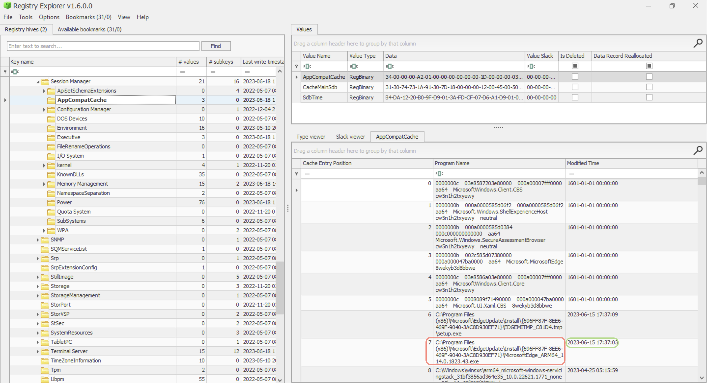
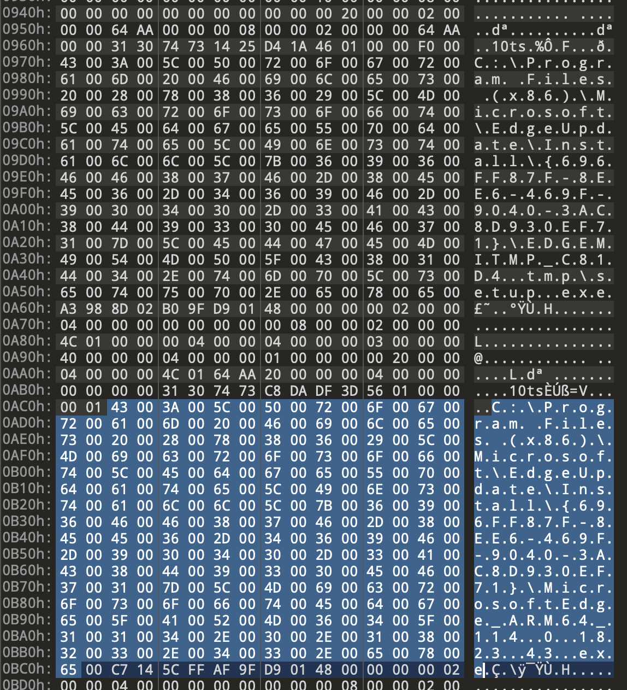

How often has the following happened to you? You want to run a program, but it’s not designed to run on this version of OS. Windows has a mechanism to run older programs on newer systems. Even when these “compatibility” adjustments are not required, Windows still logs the information for all the programs run.
☠️ Anatomy
📂 Path: SYSTEM hive
🔑 Key: CurrentControlSet\Control\Session Manager\AppCompatCache\AppCompatCache (Windows Vista +).
🔑 Key: CurrentControlSet\Control\Session Manager\AppCompatibility\AppCompatCache (Windows XP) - 93 entries only.
🛠 Tools: ShimCacheParser.py (requires Python2), AppCompatCacheParser
Windows 7+ 1024 entries, Server 2003 - 512 only 😔. ⛔️ No execution flag for Windows 10!
Originally was used to identify compatibility issues between 32 and 64-bit progs. It might not be reliable evidence that the program was executed or even installed, but if it was installed and deleted - it won’t be deleted from here. ShimCache is another name for this artefact. Uses file system timestamps. A new entry will be created if the executable is modified or renamed, but the modified date and time will be the same for both files even after these actions occur. \$UsnJrnl is another place to make sure that is what happened \$Logfile.
ShimCache tracks the following fields of interest:
🐾 App name 🐾 File path 🐾 Size (Windows XP only) 🐾 Last modified time

When exported as is, in binary format, this key looks like this:

⛔️ During system operation, ShimCache updates are stored in RAM and written at shutdown or reboot (for Win10+)! So, ShimCache is lost if the PC is unplugged. ⛔️ Doesn’t track the file execution for Win7+ systems. ⛔️ Only logs some file extensions. ⛔️ Recent events are written on top (helps given that no execution times are provided). ⛔️ If a program gets modified, rewritten or renamed - it’s shimmed again. ⛔️ If the last modified time differs from the filesystem time -> time modification occurred. ⛔️ On Vista+, ShimCache is not evidence of execution. Vista, W7 and W8 had
InsertFlagthat, when set to true, indicated that the program was run. ⛔️ Several ShimCache for each ControlSet (the most recent info is in 🔑SYSTEM\CurrentControlSet)
🛠️ Tools
🛠️ AppCompatCacheParser (Eric Zimmerman, Win7+) and 🛠️ ShimCacheParser.py (Mandiant).
📘 Parsing the ShimCache:
.\AppCompatCacheParser.exe -f .\SYSTEM --csv C:\temp
✍🏻 Note that
ShimCacheParser.pycan also parse.regfiles (good for scaling).